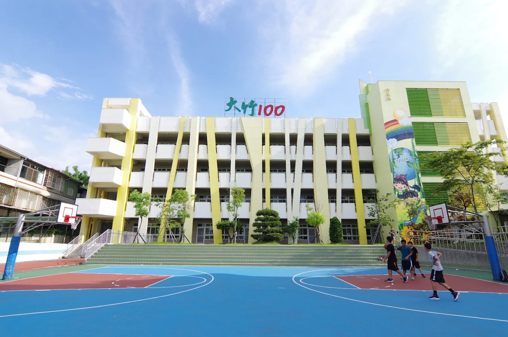
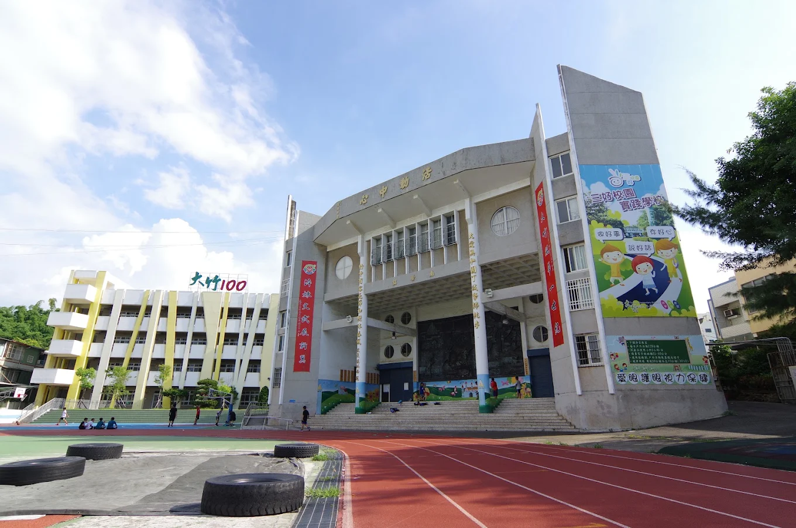
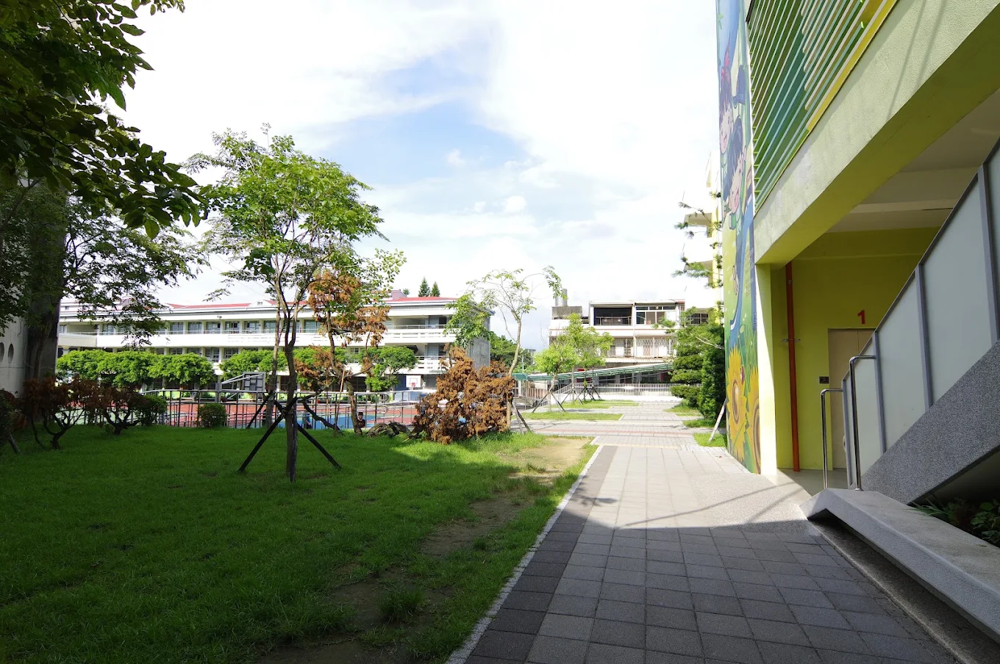
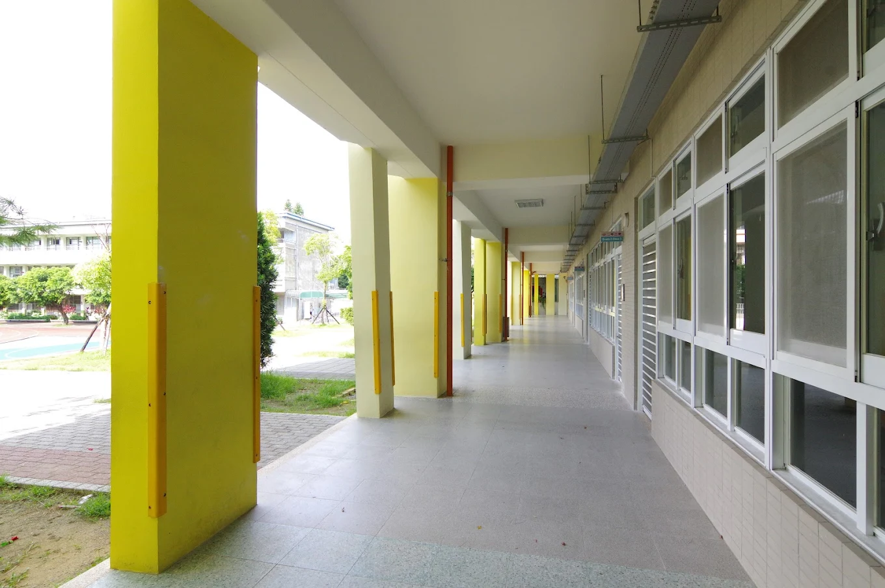
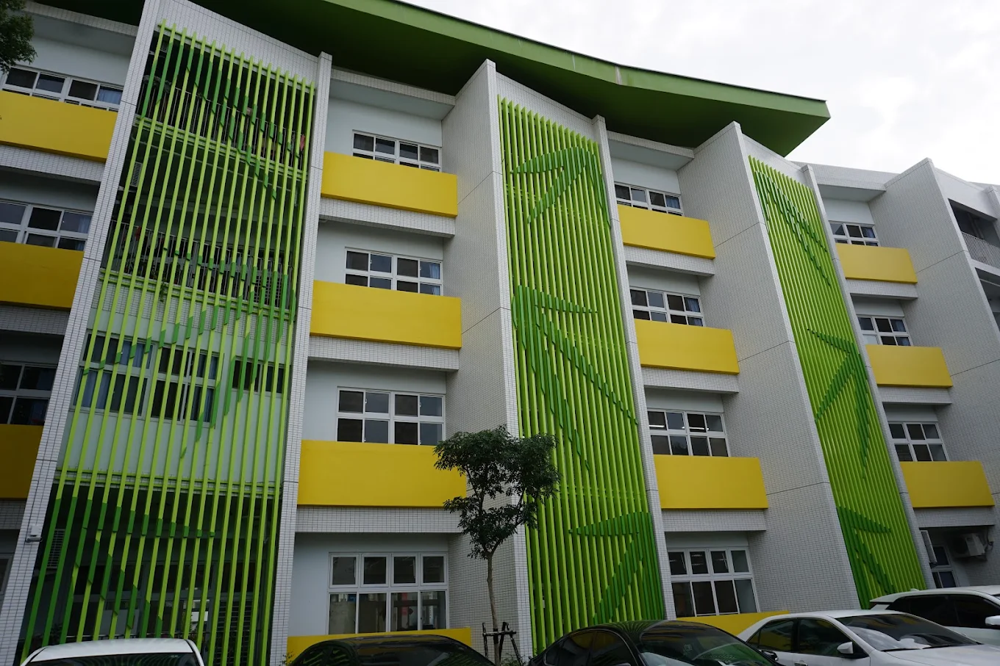
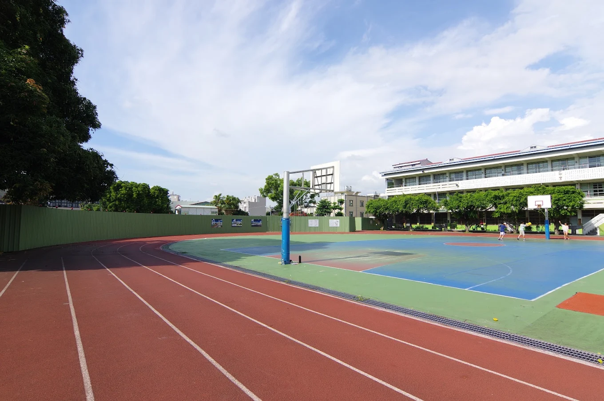
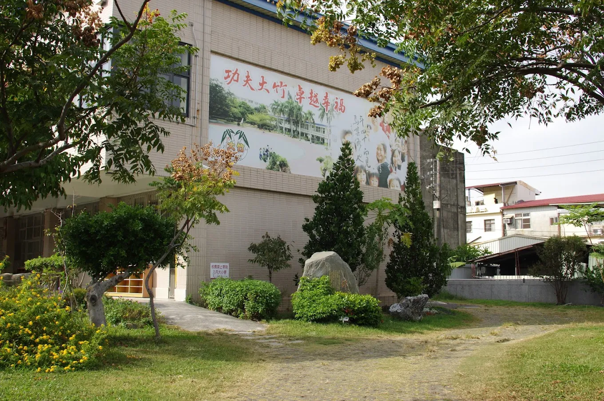

A hundred-year-old school with a hundred years of stories.
一所走過百年、也說了百年故事的學校。
Tachu Elementary sits at the foot of Bagua Mountain in Changhua City, on the quiet lanes off Zhannan Road. Founded in 1916, it is one of the oldest schools in the city — a place where great-grandparents, grandparents, and grandchildren have all learned to read and write under the same name.
大竹國小坐落於彰化市八卦山山腳、彰南路一帶的寧靜巷弄裡。學校創立於民國 5 年（1916），是彰化市最悠久的學校之一——曾祖父母、祖父母與孫輩，都在同一個校名下識字、長大。
Tachu is, in a real sense, a mother school. Over its long history it opened branch campuses that grew into four schools still teaching today — Kuaiguan, Taihe, and Guosheng Elementary among them. The children of this corner of Changhua have, for generations, started their journey here.
大竹是名副其實的「母校」。百年來，它先後設立的分校，長成了今日仍在的好幾所學校——快官國小、泰和國小、國聖國小都源於此。這一帶彰化的孩子，世世代代都從大竹啟程。
The neighborhood around the school is warm and down-to-earth, home to farming and working families across six villages. Today Tachu carries its long history forward with reading, hands-on learning, environmental and food education — and, with My Culture Connect, everyday English woven right into school life.
學校所在的社區民風純樸，橫跨六個里，多是務農與勞工家庭。如今的大竹，帶著悠長校史向前走：閱讀、動手做、環境與食農教育——並在人師教育協會的協力下，把日常英語織進每天的校園生活。
Founded in 1916, Tachu is a living piece of Changhua City's history — the mother school whose branches grew into four schools still teaching today.
A signature performance team where students learn rhythm, teamwork, and stage confidence — a proud part of Tachu's school culture.
A teaching garden, rice planting and harvesting, recycling and energy-saving — Tachu's students learn to care for the land with their own hands.
From calligraphy and English picture books to "magic science" and a young-Darwin nature club, there is a club for every kind of curious mind.
From a single classroom in 1916 to a century of teaching, Tachu has sent generations of Changhua children — and several whole schools — out into the world. We carry that story forward, now in two languages.
A walk around Tachu — from the "Tachu 100" building to the quiet garden path.
走一圈大竹校園，從「大竹100」大樓到安靜的花園小徑。






